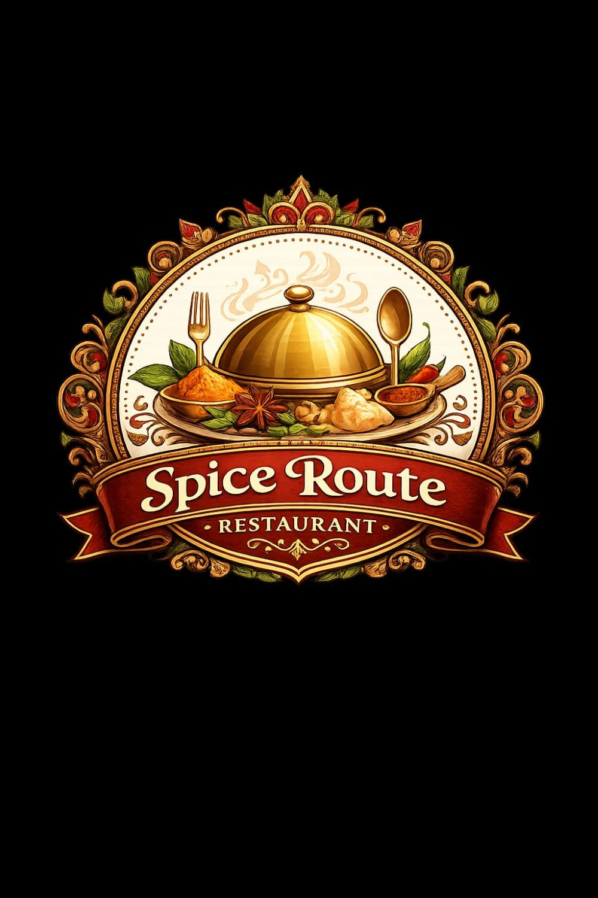

Welcome to Spice Route Restaurant! Experience the rich flavors of India with our delicious and freshly prepared dishes.
| Dish | Category | Description | Price |
|---|---|---|---|
| Masala Dosa | Breakfast | Crispy dosa served with chutney and sambar. | ₹120 |
| Veg Biryani | Main Course | Flavorful rice cooked with vegetables and spices. | ₹180 |
| Paneer Butter Masala | Main Course | Paneer cubes in rich buttery tomato gravy. | ₹250 |
| Gulab Jamun | Dessert | Soft milk-solid dumplings in sugar syrup. | ₹80 |
MG Road, Bengaluru
+91 98765 43210
info@spiceroute.com
Open Daily: 10 AM - 11 PM